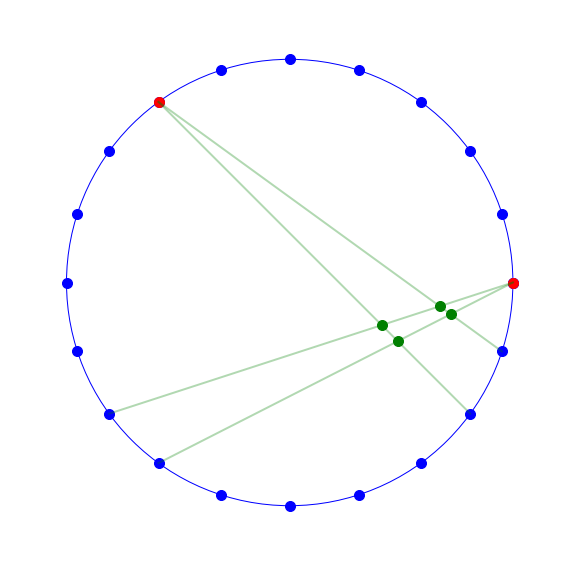
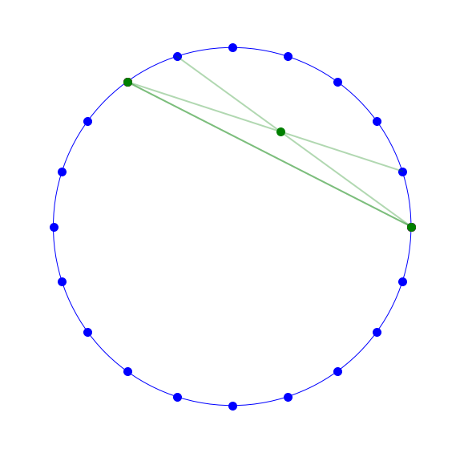
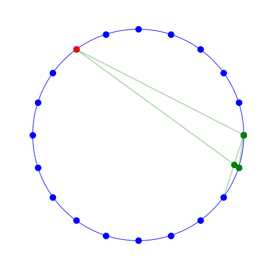
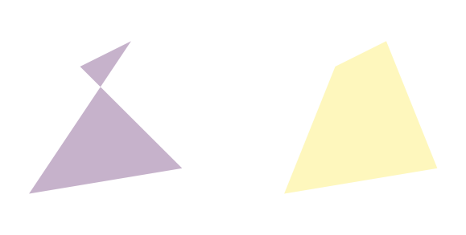
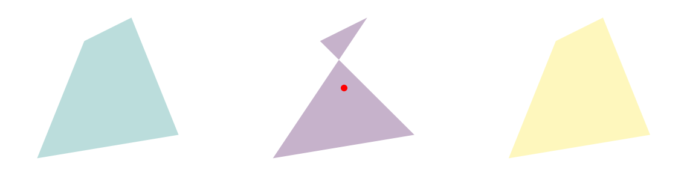

1. Introduction
This post belongs to a new series of posts where I intend to face the challenge of drawing both static and dynamic pictures with a programming language. This practise is commonly referred to as code art, where art is built with code.
The first four posts will aim at defining a function to create a geometric pattern, a spirograph pattern in circle, inspired by this video, with Python libraries.
We will follow these steps:
- Problem definition and visualization basics in Part1.
- Line definition through two points and intersection of two lines in Part2.
- Polygon vertex detection and postprocessing of intersection points Part3.
- Polygon drawing, colour scheme definition, global function implementation and final drawings in Part4.
We want to make the two previously-developed methods faster by handling the 4-tuple of 4 points that should generate a polygon at once. We need to transform the point arrays into 2 dimensional arrays with as many rows as the number of points to handle simultaneously.
2. Vectorized parametric method for polygon vertex detection
We take the points A and B, repeat them 4 times over the vertical axis (row-wise) and assign them to AAs and CCs.
I tend to use s at the end of a variable naming to highlight the plurality of the data.
Since we want the four lines bordering the polygon, the four rows are listed as:
(A, Pka1, B, Pkb1), first segment connects A to first $P_k$, while the second segment connects B to its first $P_k$,(A, Pka1, B, Pkb2), first segment connects A to first $P_k$, while the second segment connects B to its second $P_k$,(A, Pka2, B, Pkb1), first segment connects A to second $P_k$, while the second segment connects B to its first $P_k$,(A, Pka2, B, Pkb2), first segment connects A to second $P_k$, while the second segment connects B to its second $P_k$.
That’s why BBs requires to repeat and DDs to tiles twice vertically.
AAs = np.tile(np.array(Pa), (4,1))
CCs = np.tile(np.array(Pb), (4,1))
print('The single point A {} becomes the 2D array\n{}'.format(Pa, AAs))
The single point A (1.0, 0.0) becomes the 2D array
[[1. 0.]
[1. 0.]
[1. 0.]
[1. 0.]]
idxA, idxB = 12, 18
Pka = (xPs[idxA:idxA+2], yPs[idxA:idxA+2])
BBs = np.repeat(np.vstack(Pka).T, 2, axis=0)
print('The two adjacent points connected to A\n{}\nbecome the 2D array\n{}'.format(Pka, BBs))
The two adjacent points connected to A
(array([-0.80901699, -0.58778525]), array([-0.58778525, -0.80901699]))
become the 2D array
[[-0.80901699 -0.58778525]
[-0.80901699 -0.58778525]
[-0.58778525 -0.80901699]
[-0.58778525 -0.80901699]]
Pkb = (xPs[idxB:idxB+2], yPs[idxB:idxB+2])
DDs = np.tile(np.vstack(Pkb).T, (2,1))
print('The two adjacent points connected to B\n{}\nbecome the 2D array\n{}'.format(Pkb, DDs))
The two adjacent points connected to B
(array([0.80901699, 0.95105652]), array([-0.58778525, -0.30901699]))
become the 2D array
[[ 0.80901699 -0.58778525]
[ 0.95105652 -0.30901699]
[ 0.80901699 -0.58778525]
[ 0.95105652 -0.30901699]]
We build a temporary function to get the points B and D linked to the two generators, given the two indexes.
def index2points(idxA, idxB):
Pka = (xPs[idxA:idxA+2], yPs[idxA:idxA+2])
BBs = np.repeat(np.vstack(Pka).T, 2, axis=0)
Pkb = (xPs[idxB:idxB+2], yPs[idxB:idxB+2])
DDs = np.tile(np.vstack(Pkb).T, (2,1))
return BBs, DDs
Now we need to treat everything as a 2D array where every row potentially gives one of the 4 polygon vertexes.
The first vector $\vec{AB}$ is the simple difference between BBs and AAs.
Each cross product of two 2D arrays is a 1D array.
The cross product of two 2D vectors in theory is a 3D vector, but in practise is treated as a scalar since the first two elements are always 0.
Therefore the 1D array coming out of the cross product is the simple list of the four pairs of two 2D vectors (or segments).
ABs = BBs-AAs
cp1 = np.cross(AAs-CCs, DDs-CCs)
cp2 = np.cross(DDs-CCs, ABs)
print('The shape of two 2D arrays cross products is indeed {} and {}'.format(cp1.shape, cp2.shape))
The shape of two 2D arrays cross products is indeed (4,) and (4,)
We need to make sure cp2 does not contain 0 values (that happens when $\vec{CD}$ and $\vec{AB}$ are parallel) to prevent either NaN or $\infty$ values as a result of the division operation.
So first we keep note of such events and then we simply replace every 0 with whatever else (say, 1).
paralSeg = cp2==0
cp2[paralSeg] = 1
To apply element-wise product between the 2D array ABs and the 1D array got from the ratio of two cross products, by exploiting Numpy broadcasting, we need to reshape the latter array to a 2D with .reshape(-1, 1).
Finally the (4, 2) array is split into two (4,) arrays, which represent the $(x, y)$ coordinates of the four intersecting points.
print('Shape of ratio of two cross products is {}'.format((cp1/cp2).shape))
Shape of ratio of two cross products is (4,)
PIs = ABs*(cp1/cp2).reshape(-1,1)+AAs
xIs, yIs = np.split(PIs, 2, axis=1)
We show here the four lines defining one of the possible polygons and the four intersecting points (green dots).
We draw the points only if the lines are coincident (paralSeg==0).
figSize = 10
fourLines(idxA, idxB)
plt.plot(xIs[paralSeg==0], yIs[paralSeg==0], ls='', marker='o', markersize=10, color="green");

We check the code for a case of parallel/collinear segments.
idxA, idxB = 6, 0
BBs, DDs = index2points(idxA, idxB)
ABs = BBs-AAs
cp1 = np.cross(AAs-CCs, DDs-CCs)
cp2 = np.cross(DDs-CCs, ABs)
are2segParallel = np.abs(cp2)<1e-5
cp2[are2segParallel] = 1
PIs = ABs*(cp1/cp2).reshape(-1,1)+AAs
xIs, yIs = np.split(PIs, 2, axis=1)
figSize = 10
fourLines(idxA, idxB)
plt.plot(xIs[paralSeg==0], yIs[paralSeg==0], ls='', marker='o', markersize=10, color="green");

3. Vectorized homogeneous method for polygon vertex detection
We have got the 4 tuples of 4 points A, B, C and D stored with same structure in arrays AAs, BBs, CCs and DDs.
We transform each of the four points into homogeneous coordinates, namely $(x_a, y_a)$ in AAs becomes $(x_a, y_a, 1)$ in AHs, and so on.
idxA, idxB = 12, 18
BBs, DDs = index2points(idxA, idxB)
AHs = np.hstack((AAs, np.ones((4, 1))))
BHs = np.hstack((BBs, np.ones((4, 1))))
CHs = np.hstack((CCs, np.ones((4, 1))))
DHs = np.hstack((DDs, np.ones((4, 1))))
print('Each of these 2D arrays has shape equal to {}'.format(AHs.shape))
Each of these 2D arrays has shape equal to (4, 3)
L1 is the coordinates of the line through points A and B, as a cross product of the homogeneous coordinates of those points.
The shape does not change.
L1 = np.cross(AHs, BHs)
L2 = np.cross(CHs, DHs)
PIHs is the homogeneous coordinates for intersecting point of the two lines.
Every row is the intersection between one of the four-line pair combinations.
We horizontally (axis=1) split the (4, 3) arrays into the three homogeneous coordinate elements, xIHs, yIHs and zIHs, each being a 1D array with shape (4,).
PIHs = np.cross(L1, L2) # homogeneous coordinates for intersecting point
xIHs, yIHs, zIHs = np.split(PIHs, 3, axis=1)
We check that the 3D scaling factor zIHs is not 0, otherwise the lines are parallel or collinear.
We finally convert homogeneous into Euclidean coordinates by dividing by zIHs.
paralSeg = np.abs(zIHs)<1e-5
zIHs[paralSeg] = 1
xIs, yIs = xIHs/zIHs, yIHs/zIHs
We draw the points only if the lines are coincident (paralSeg==0).
figSize = 10
fourLines(idxA, idxB)
plt.plot(xIs[paralSeg==0], yIs[paralSeg==0], ls='', marker='o', markersize=10, color="green");
We check the code for a case of parallel/collinear segments.
idxA, idxB = 6, 0
BBs, DDs = index2points(idxA, idxB)
BHs = np.hstack((BBs, np.ones((4, 1))))
DHs = np.hstack((DDs, np.ones((4, 1))))
L1 = np.cross(AHs, BHs)
L2 = np.cross(CHs, DHs)
PIHs = np.cross(L1, L2) # homogeneous coordinates for intersecting point
xIHs, yIHs, zIHs = np.split(PIHs, 3, axis=1)
paralSeg = np.abs(zIHs)<1e-5
zIHs[paralSeg] = 1
xIs, yIs = xIHs/zIHs, yIHs/zIHs
figSize = 10
fourLines(idxA, idxB)
plt.plot(xIs[paralSeg==0], yIs[paralSeg==0], ls='', marker='o', markersize=10, color="green");

4. Postprocess the set of intersecting points
We need to process the list of coordinates for the detected intersecting points.
Here the main steps to perform:
- We first need to drop any duplicates, which means points that coincide with each other. Despite Matplotlib can handle polygons with duplicated coordinates, it is a good practise to remove those points.
- Whatever point lying outside the circle has to be removed.
- The array of point coordinates needs to be sorted in a (anti-)clockwise fashion to make sure the patch Matplotlib has to fill with colour is convex. A simple visual example will come soon.
4.1 Remove duplicate points
Let’s take a case where we end up with duplicate intersecting points (idxA=18 and idx=19).
idxA, idxB = 18, 19
BBs, DDs = index2points(idxA, idxB)
BHs = np.hstack((BBs, np.ones((4, 1))))
DHs = np.hstack((DDs, np.ones((4, 1))))
L1 = np.cross(AHs, BHs)
L2 = np.cross(CHs, DHs)
PIHs = np.cross(L1, L2) # homogeneous coordinates for intersecting point
xIHs, yIHs, zIHs = np.split(PIHs, 3, axis=1)
paralSeg = np.abs(zIHs)<1e-5
zIHs[paralSeg] = 1
xIs, yIs = xIHs/zIHs, yIHs/zIHs
figSize = 8
fourLines(idxA, idxB)
plt.plot(xIs[paralSeg==0], yIs[paralSeg==0], ls='', marker='o', markersize=10, color="green");

You can realize the point $(1, 0)$ is repeated twice, placed at second and last rows. However we cannot simply feed that to the Numpy unique function since the two points are not numerically identical.
First those points need to be rounded up to the 6-th decimal digits with the around method and then fed to the unique function.
polygonalPoints = np.hstack((xIs, yIs))
print('Full set of coordinates identified for the 4 pairs of intersecting lines:\n{}'.format(polygonalPoints))
Full set of coordinates identified for the 4 pairs of intersecting lines:
[[ 9.09422702e-01 -2.78768258e-01]
[ 1.00000000e+00 -1.53094054e-16]
[ 9.51056516e-01 -3.09016994e-01]
[ 1.00000000e+00 -2.09377778e-16]]
polygonalPoints1 = np.unique(np.around(polygonalPoints, decimals=6), axis=0)
print('Set of unique rounded coordinates identified for the 4 pairs of intersecting lines:\n{}'.format(polygonalPoints1))
Set of unique rounded coordinates identified for the 4 pairs of intersecting lines:
[[ 0.909423 -0.278768]
[ 0.951057 -0.309017]
[ 1. -0. ]]
4.2 Remove points outside the circle
In the original drawing every polygon lies within the circle only, so we need to remove every point of the intersecting set exceeding it.
The logic is quite straightforward.
First the squared distance of the point from the circle centre $(0, 0)$ is obtained by squaring the coordinates element-wise, summing along the columns and finally taking the square root to get a linear distance.
We round the distance to the third digit and check it is less than the circle radius radius.
The intersecting point set is reduced to such points that satisfy this check only.
In Numpy the syntax to select some rows of array AA that meet some criteria cc is AA[cc==True, :].
distance = np.sqrt(np.sum(polygonalPoints1**2, axis=1))
criteria = np.around(distance, decimals=3)<=radius
polygonalPoints2 = polygonalPoints1[criteria, :]
4.3 Sort the set of intersecting points anticlockwise
We generate 4 2D points as vertexes of a polygon and draw it in purple on the LHS, making sure that it is concave (non-convex).
A swapped version of the same set (2 and 3 rows) is then shifted by 5 units rightward and depicted in yellow. Clearly the two shapes are quite different, according to the specific order of the points along the array rows. We need to sort the set in some way. We take the anticlockwise sense.
polygCoord = np.array([[2,-1], [0,1], [1,1.5], [-1,-1.5]])
polygCoord1 = polygCoord+np.array([5, 0])
swapIdx = [1, 2]
polygCoord1[swapIdx] = polygCoord1[swapIdx[::-1]]
plt.figure(figsize=(10, 5))
patches = [Polygon(polygCoord, True), Polygon(polygCoord1, True)]
pc = PatchCollection(patches, alpha=.3)
pc.set_array(np.array([0, 1]))
ax = plt.gca()
ax.add_collection(pc)
ax.get_xaxis().set_ticks([])
ax.get_yaxis().set_ticks([])
ax.axis('off')
ax.axis('equal');

We now complete the logic to sort anticlockwise.
If there are still 4 intersecting points after applying the two previous steps, we need to sort those points anticlockwise.
Here it comes the polar coordinate system at hand one more time.
We first calculate the centroid C of the polygon as the geometric mean of the 4 points.
It is the row-wise (axis=0) mean of point coordinates set (red point the below chart).
Then the angle $\theta_j$ is formed between the segment connecting the $P_j$ and the centroid C and the x axis.
That angle gives the criterion to sort the 4 points. Since angle increases anticlockwise by convention in polar system, points are sorted accordingly, but it has no effect on the polygon visualization in Matplotlib.
The angle between one segment $\vec{CP_j}$ and the horizontal line is given by the arctangent function as:
$$ \theta_j = \arctan{\frac{y_{P_j}-y_C}{x_{P_j}-x_C}} $$
This function is implemented both in Numpy and in the math library as atan2(y, x).
Since we need to sort the 2D array of point coordinates $(x,y)$ with respect to a third temporary variable, $\theta$, the Python sorting functionality is required due to a lack of similar package in Numpy.
Indeed, one can here use the key attribute to the sort function to give the sorting criterion.
That’s why we use the atan2 from the math library.
The new polygon is shifted by 5 units leftward and depicted in green.
centroid = np.mean(polygCoord, axis=0)
polygCoord_ = list(polygCoord)
polygCoord_.sort(key=lambda pnt: math.atan2(pnt[1]-centroid[1], pnt[0]-centroid[0]))
polygCoord2 = np.array(polygCoord_)-np.array([5, 0])
patches.insert(1, Polygon(polygCoord2, True))
plt.figure(figsize=(20, 5))
plt.plot(centroid[0], centroid[1], ls='', marker='o', markersize=10, color="red");
pc = PatchCollection(patches, alpha=.3)
pc.set_array(np.array([0, 1, 2]))
ax = plt.gca()
ax.add_collection(pc)
ax.get_xaxis().set_ticks([])
ax.get_yaxis().set_ticks([])
ax.axis('off')
ax.axis('equal');
